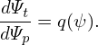
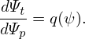
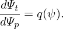

∇ψ + ∇𝜃 +
∇ψ + ∇𝜃 +  ∇ζ,
∇ζ,
In solving the MHD eigenmode equations in toroidal geometry, we also need the radial differential operator ∇ψ ⋅∇. Next, we derive the form of the operator in (ψ,𝜃,ζ) coordinates. Using
|
∇f = ∇ψ + ∇𝜃 + ∇ζ,
|
the radial differential operator is written as
where ∂(qδ)∕∂ψ and q∂δ∕∂𝜃 are given respectively by Eqs. (259) and (253). Using the above formula, ∇ψ ⋅∇ζ is written as
![[ ]
∂(qδ) 2 ∂δ-
∇ ψ ⋅∇ζ = − ∂ψ |∇ ψ| + q∂𝜃∇ 𝜃⋅∇ ψ .](tokamak_equilibrium380x.png) | (291) |
This formula is used in GTAW code.
![∇ ψ ⋅∇f = |∇ ψ|2∂f-+ (∇𝜃 ⋅∇ ψ)∂f-+ (∇ζ ⋅∇ψ )∂f-
∂ψ ∂ 𝜃 ∂ζ
2∂f- ∂f- ∂f-
= |∇ ψ| ∂ψ + (∇𝜃 ⋅∇ ψ)∂ 𝜃 + {∇ [ϕ − qδ(ψ,𝜃)]⋅∇ ψ}∂ζ
2∂f ∂f ∂f
= |∇ ψ| ∂ψ-+ (∇𝜃 ⋅∇ ψ)∂-𝜃 − ∇ [qδ]⋅∇ ψ∂ζ
∂f ∂f ∂f
= |∇ ψ|2---+ (∇𝜃 ⋅∇ ψ)---− [q∇δ +δ∇q ]⋅∇ψ ---
∂ψ ∂ 𝜃 [ ( ∂ζ) ]
= |∇ ψ|2∂f-+ (∇𝜃 ⋅∇ ψ)∂f-− q ∂δ-∇ψ + ∂δ∇ 𝜃 + δq′∇ ψ ⋅∇ ψ∂f-
∂ψ ∂ 𝜃 [ ∂ψ ∂𝜃 ] ∂ζ
2∂f- ∂f- ∂-(qδ) 2 ∂δ- ∂f-
= |∇ ψ| ∂ψ + (∇𝜃 ⋅∇ ψ)∂ 𝜃 − ∂ ψ |∇ψ| + q∂𝜃 ∇𝜃 ⋅∇ψ ∂ζ, (290)](tokamak_equilibrium379x.png)